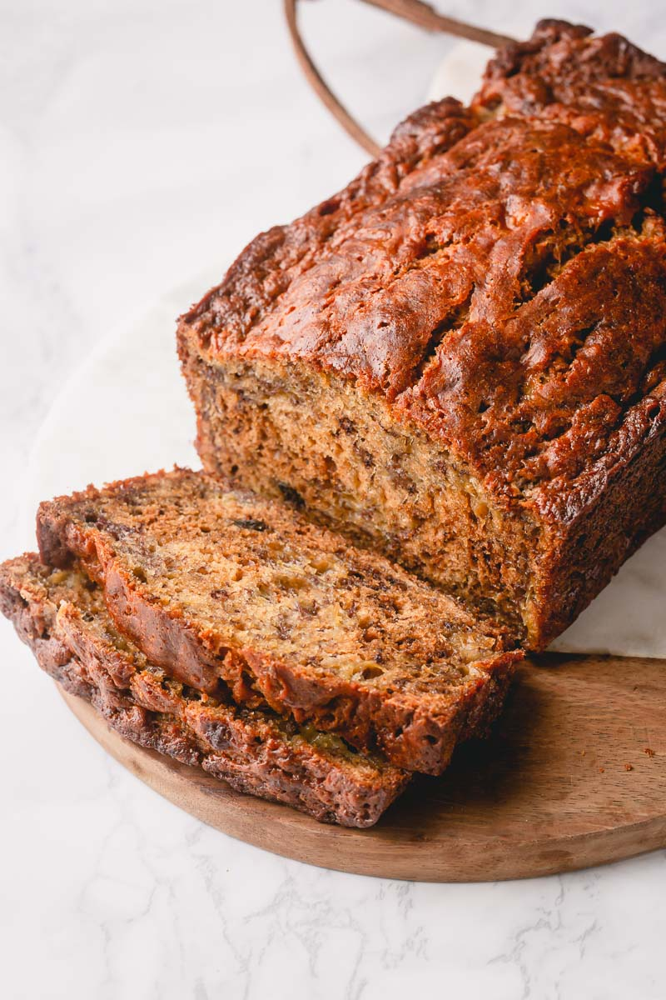

Banana Bread

Healthy and Delicious
Do you have any bananas you let sit for too long? Well then its the perfect opportunity to make banana bread.
Banana bread is easy to make, no special equipment needed.
Ingredients
- 4-5 bananas
- 1/2 cup melted butter
- 3/4 cup brown sugar
- 2 eggs (mixed)
- 1 tsp vanilla extract
- 2 cups flour (sifted)
- 1 tsp baking soda
- 1/4 tsp salt
- chocolate chunks/nuts (optional)
Steps
Note:Preheat your oven to 175°C (350°F) for 10 minutes before you put the batter in.
- Mash the bananas completely in a bowl.
- Add the sugar and melted butter to the bowl and mix with a wisk.
- Add the eggs and vanilla extract, then whisk again.
- In a separate bowl, mix in the flour, baking soda, and salt.
- Incorporate the flour mixture to the liquid mixture using a spatula.
- You can add chocolate chunks or nuts to the batter if you want to. The amount is to your liking.
- Pour in the batter into a loaf tin or any baking container, and put into the oven
- Bake for around 40 minutes to an hour, or if the toothpick comes out clean when poked from the center of the bread.
- Pull out the bread and let it cool down for 15 minutes, then its ready to serve. Enjoy!